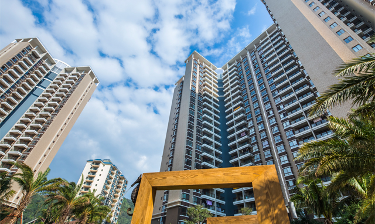
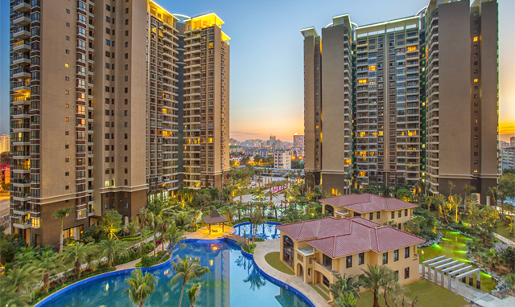
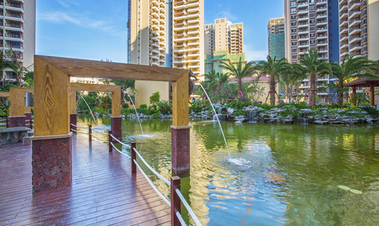

临春岭森林公园位于三亚市凤凰路临春段，占地面积2800亩，海拔最高点为195.6米，公园设主入口和北门， 建有公园主广场和登山栈道5500米，沿登山栈道建有逐鹿台、瞭望塔、茶亭、半山揽月、凤凰林、对弈台6个观景点[1] 。 开园时间为每天早上7点至晚上21点，全年无休。临春岭森林公园是三亚市唯一一处开放式公益性的森林公园。
景点类型：登山、观景、生态养生
最佳季节：全年
著名景点：瞭望塔，可俯瞰三亚全景